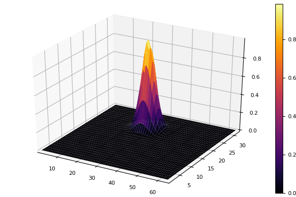

Rotation of a gaussian distribution
#md # notebook
\[ \frac{df}{dt} + (y \frac{df}{dx} - x \frac{df}{dy}) = 0\]
import Splittings: advection!, UniformMesh
import Splittings: @Strang
using Plots
pyplot()Plots.PyPlotBackend()function with_bsl(tf::Float64, nt::Int)
nx, ny = 32, 64
meshx = UniformMesh(-π, π, nx)
meshy = UniformMesh(-π, π, ny)
x = meshx.points
y = meshy.points
dt = tf/nt
f = zeros(Float64,(nx,ny))
for (i, xp) in enumerate(x), (j, yp) in enumerate(y)
xn = cos(tf)*xp - sin(tf)*yp
yn = sin(tf)*xp + cos(tf)*yp
f[i,j] = exp(-(xn-1)*(xn-1)/0.2)*exp(-(yn-1)*(yn-1)/0.2)
end
anim = @animate for n=1:nt
@Strang(advection!( f, meshx, y, tan(dt), axis=1),
advection!( f, meshy, -x, sin(dt), axis=2))
surface(f)
end
endwith_bsl (generic function with 1 method)@time f = with_bsl( 2π, 20)┌ Info: Saved animation to
└ fn = "/Users/travis/build/pnavaro/Splittings.jl/docs/build/examples/rotanim.gif"
23.813300 seconds (8.13 M allocations: 363.802 MiB, 1.15% gc time)
This page was generated using Literate.jl.